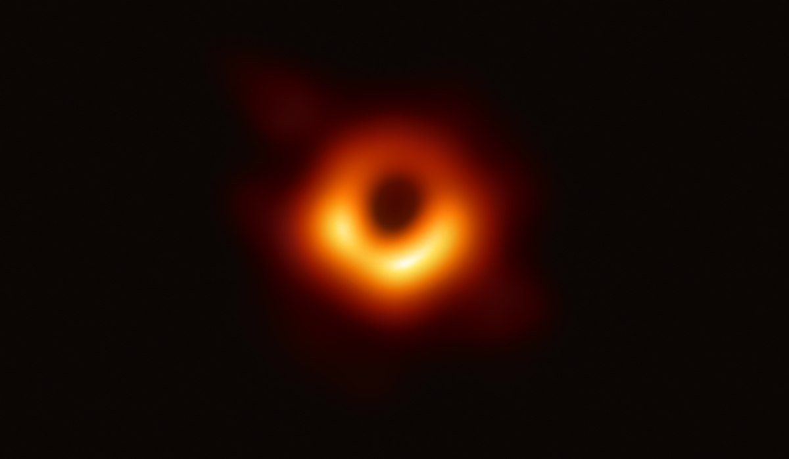

Black Holes
Aaron Serpilin 07-31-2020
Introduction
Black holes are one of the most complex things in the entire universe. Seen in the
life cycle of stars chapter, they are formed when the mass of the core
left from a super massive star after it underwent supernovae is greater than the Chandrasekhar limit.
In fact one of the most famous scientific theories, the string theory, was created
because there was no way of explaining how the laws of physics inside black holes allowed mass to be infinitely dense.
Definition
Well, now lets dive into what black holes are exactly.
 Image credit: NASA
Image credit: NASA
Black holes are entities in space created from the remnants of dead stars, they are infinitely dense and their gravity
is so strong that not even light can escape them.
Black holes are one of the most mysterious objects in the universe. We know where they come from, how they affect
their surroundings, but we do not know what happens to all of the mass inside of it. It is incredible to think
of any mass being subject to such gravity. Here is where the information paradox
comes in, a topic we will see in another chapter.
History
In 1783, an English cleric and amateur scientist called John Michell first proposed that objects such as black holes
could exist in the universe according to Newton's laws of gravity. Of course, at the time, black holes were not called
black holes yet. Their iconic name first popped up in 1967, although the idea was way older.
During the 1930s, theorists used Einstein's general relativity theory to prove that
massive enough objects could collapse upon themselves to create black holes. Einstein was always skeptical of this idea
and stated multiple times that he believed that such objects could not exist.
It was not until the early 1970s where British astronomers Louise Webster and Paul Murdin at the Royal Greenwich observatory and
Thomas Bolton, a student at the University of Toronto independently announced the discovery of a massive and invisible
object 6000 light-years away. This in fact was the first observed black hole, and it was codenamed Cygnus X-1.
But the history of black holes does not end there. Recently, on the 10th of April of 2020, a group of astronomers using the
Event Horizon telescope took the first image of a black hole. The captured black hole is located at the center
of a galaxy called Messier 87, located in the Virgo cluster. This image is historic.

Image credit: NASA
Parts
Now lets dive in a bit into the parts of a black hole and explain what happens in them.
 Image credit: Forbes
Image credit: Forbes
According to the image above, the outermost part of a black hole is the ergosphere. This is the range in which objects will
start feeling the gravitational pull of the black hole. It is impossible for an object to remain static once they reach
this point. Objects here can still escape the black hole if they reach a certain escape velocity, a velocity required
to break free from the gravitational force of something- escape velocities depend on the gravity of every black hole.
The next part is the event horizon, this is the part of the black hole of which nothing can escape, not even light.
Once something reaches this point, it is destined to be infinitely squashed.
The next part, and final part of a black hole is the singularity. The center of black holes are called singularities
because they are infinitely dense. The collapse that the gravity of black holes creates causes the volume of its mass
to be infinitely small. The density of an object is equal to its mass- amount of matter in an object- divided by its volume-
amount of space an object takes up.
If we divide its mass by 0- its volume- you will get 0, but if we start dividing it by the numbers right before 0, we
actually obtain infinity. As mentioned before, we do not know the laws of physics inside of black holes. String theorists
are encharge of that and even they do not know the answer, so do not stress.
What we do know is that black holes rip apart atoms, they separate electrons from their orbits and divide the nuclei.
General relativity predicts that everything that goes into a black hole is infinitely
dense but we cannot truly prove that. That is where string theorists come in. They are trying to find another
branch of physics that would explains what happens inside the singularity and around it.
There is a measurement for the radius between the singularity and the event horizon, it is called the Schwarzschild radius. But
singularities change if a black hole rotates. When a black hole rotates, its singularity is no longer a point, its shape becomes
something more as a donut. This is called a ringularity.
 Image credit: Gfycat
Image credit: Gfycat
Matter interaction
Against common belief, matter does not fall directly into black holes. At first, matter passes by black holes and ignore it,
but when they are starting to leave it, they get attracted to it by its gravitational orbit. Matter starts to accumulate
around the black hole in a circular shape, this is called an accretion disk. The video below ilustrates what an accretion disk
would look like. The innermost material starts spiraling into the black hole and new matter takes up its place. These disks
are extremely active due to the constant friction and collision of material. In the end, the outermost layers become the
innermost and finally all become part of the singularity.
Video credit: NASA
In fact if Earth was swallowed by a black hole, the closest side to it would start to stretch. The problem is that Earth
is not made of rubber. Which means, the more stretched it became would be terrible. The surface, the mantle and the core
would start to crumble until it would eventually collapse. I do not think that a giant puddle of melted iron and nickel
would be very fun to watch.
Wormholes
Something that characterizes humans is that whenever they do not understand stuff, they normally join all of that together.
Same thing happens with the universe. Black holes have always been linked with wormholes. Also known as Einstein rosen bridges, wormholes are hypothesized intergalactic
or perhaps even interdimensional portals or shortcuts, similar to those observed in Star Trek or in Guardians of the galaxy.
People have visualized in their head that if you enter a black hole you would appear in another place of the universe very
far away. The curious part about this is that if this were true, only one side of the wormhole would be a black hole.
The other side would be a white hole-basically the Big Bang, these are covered in another
chapter.
 Image credit: space.com
Image credit: space.com
As seen in the image, the black hole is on top and it connects two distant parts of the universe through a portal, where the
exit is a white hole. But once again, it is important to recall that white holes and wormholes are simple theories
and hypothesis.
Center of galaxies
I am sure that most people have heard that the center of our galaxy is a black hole, in fact it even has a name:
Sagittarius A*. But how do we know that it is there? I mean, nothing can escape black holes, which means when we try
to observe black holes with light, we never receive an image back because it remains trapped there. But we can see the
effects of black holes. According to Albert Einstein's general relativity, the immense
gravity of black holes distort space itself. Besides, matter near or in the gravitational force of a black hole are greatly
accelerated and release high-energy radiation.
In the history section above, you can observe the first image ever taken of a black hole.
Can you notice what is around the singularity? Yes, it is an accretion disk.
Now returning a bit to the topic, how do we know there are black holes at the center of galaxies? To understand the answer,
I deeply recommend you should check out the gravity section, especially Newton's gravity force
formula (Fg = Gm1m2 / r^2) before you read this part. Our galaxy is basically the same as our solar system, there is one
massive object at the center of which less massive objects orbit. This massive object needs to exert an incredible
gravitational force. So, in the case of galaxies, there must be a super massive object at its center that exerts enough
gravity to make the solar systems orbit it.
Just to put you in perspective, out of the mass of our solar system, 99.8% comes from the sun. Which means that all the
planets plus the asteroids and everything else only account for the 0.2% of our solar system's mass. In our galaxy,
each solar system accounts for even less than that. Our galaxy has approximately between 10 billion and 100 billion
solar systems. If you do quick math, every solar system approximately acquaints for 0.0000001% of the mass of our galaxy.
I hope this helped you graphic in your mind how massive this thing has got to be.
So, as soon as we humans learned this, we started searching for something massive, huge at the center of our galaxy but we
found nothing. If there were something huge we could definitely see it. So scientists were left with a doubt, what object
in the universe has a huge mass, is not very big and exerts and incredible gravitational force?
Black holes.
 Image credit: npr.org
Image credit: npr.org
Types of black holes
Now that we got the elephant out of the room, lets quickly wrap up the types of black holes. There are two confirmed types
of black holes and a third one being analyzed.
The first type is a stellar black hole, their mass is between 3 times and 10 times the mass of our sun.This is the smallest
type of black hole because the minimum mass a star needs to become a black hole is triple the mass of our sun.
A fun fact, as seen before the 99.8% of the mass of our solar system is from the sun, which means if we joined the mass
of all our solar system, we wouldn't even be close that the mass needed for a black hole. We would need at least 2 more
stars with the mass of our sun. So that you know, the mass of our sun is 2 x 10^30 kg.
The second type of black holes are called supermassive black holes. The mass of these range between millions and billions of
times greater than the mass of our sun. These supermassive black holes are those found in the center of galaxies.
The last type, which is still being debated are intermediate black holes. I mean it would make sense right? We have a gap
between stellar and supermassive black holes of 9 orders of magnitude. Intermediate black holes are those whose mass ranges between
100 and 1000 times the mass of our sun.
The death of black holes, Hawking radiation
Hawking radiation is a very complex theory, but as always we will try to wrap it up in a nutshell.
As its name shows, this was discovered by Stephen Hawking in 1974. It is one of the few theories out there that manages to
connect general relativity and quantum mechanics.
Hawking radiation explains how certain particles are released outside of the event horizon of a black hole through quantum
effects.
According to Hawking radiation,black holes will eventually disappear in trillions of years. This process is so long that you
might as well call it for ever. What happens here is that according to Einstein's energy formula, E = mc^2 (I think it is the
most known formula around the world), you can obtain mass from energy and energy from mass. Mass being m = E/c^2. According
to Einstein, mass and energy are the same thing, they are equivalents. The gravity fields of black holes are so
energetically dense, that they start creating particles of matter right outside the event horizon.
When matter is created out of energy, two particles are created: one particle of matter and another of
antimatter. These travel in opposite directions as seen in the image below, which means that
one particle escapes the black hole meanwhile the other gets right back in. Now the mass of the black hole is less by the
particle that just left. The smaller the surface area of the black hole, the faster it evaporates- this is just a term
astrophysicists use to describe this process- because the intensity of energy goes up because it is more tightened up.
 Image credit: quora.com
Image credit: quora.com
It is possible to calculate how long a black hole will live with the following formula:
tev = 5120πG^2 M^3 / hc^4
The particles that black holes emit are photons- and their counterparts- and when the temperature of a black hole rises
to 11600 K or more, they would start also emitting neutrinos additionally to the photons.
During centuries, scientists believed that the information that goes into black holes goes somewhere else or disappears.
In brief that is the information paradox but after Hawking's discovery of Hawking
radiation, our perspective around it has changed. Now we believe that when black holes emit particles, these particles
contain the same information as they had once they entered the singularity. This is still an active hypothesis.
The last pulse of energy of a black hole would be the highest form of energy, gamma rays. That is how a black hole
would eventually die.
Sources
- NASA
- NASA
- NASA
- NASA
- NASA
- Forbes
- Science Focus
- Neil deGrasse Tyson podcast
- Astrophysics for people in a hurry